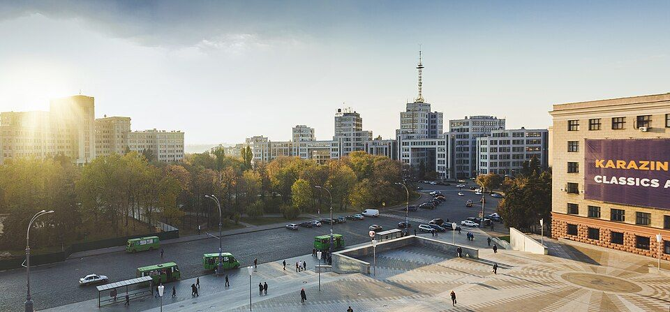

Архітектурні пам'ятки, старовинні храми, сади та символи міста, які варто побачити на власні очі

Майдан Свободи — простір, задуманий для столиці
Центр міста · 1920-ті роки
Майдан Свободи
Головний майдан Харкова і один з найбільших міських майданів Європи: за розміром він посідає шосте місце в Європі та дванадцяте у світі. Його спланували в 1920-х роках, коли Харків був столицею, — величезний простір мав підкреслювати столичний статус міста.
Майдан складається з двох частин: прямокутної, що виходить на вулицю Сумську, і круглої, діаметром 350 метрів, перед Держпромом. Довкола стоять монументальні будівлі — Держпром, головний корпус університету, готель «Харків». Тут традиційно проходили міські свята, концерти й фестивалі.
Цікаво: площа майдану — 11,9 гектара, це майже 17 футбольних полів.
Будинок Державної промисловості — архітектурна візитівка Харкова й шедевр конструктивізму. Його звели лише за три роки, з 1925 по 1928 рік, за проєктом архітекторів Сергія Серафимова, Самуїла Кравця та Марка Фельгера.
Держпром став першим радянським хмарочосом. Будівля складається з дев'яти веж заввишки від 6 до 13 поверхів, з'єднаних переходами над вулицями; висота споруди — 63 метри. Сучасників вона так вражала, що Харків навіть порівнювали з Нью-Йорком.
Цікаво: у 2017 році Держпром внесли до попереднього списку Світової спадщини ЮНЕСКО.
Один з найстаріших університетів України — за віком другий після Львівського. Його заснували в 1804 році з ініціативи просвітника Василя Каразіна на кошти місцевої громади, а урочисто відкрили 29 січня 1805 року.
Головний корпус — висотна будівля на майдані Свободи, зведена в 1932 році як Будинок проєктів і згодом передана університетові. Тут навчався біолог Ілля Мечников і викладав фізик Лев Ландау — обидва згодом стали лауреатами Нобелівської премії.
Цікаво: університет кілька разів змінював назву, а сучасну — на честь засновника Василя Каразіна — має з 1999 року.
Один з найстаріших парків Харкова. Його заклали в 1804 році як університетський сад, а в 1935 році назвали на честь Тараса Шевченка. Тінисті алеї, фонтани й лавки роблять сад улюбленим місцем прогулянок харків'ян, а поруч розташовані зоопарк і ботанічний сад університету.
Біля входу з вулиці Сумської стоїть відомий пам'ятник Тарасові Шевченку, відкритий 24 березня 1935 року (скульптор Матвій Манізер, архітектор Йосип Лангбард). Довкола постаті Кобзаря по спіралі розміщено 16 бронзових фігур, а загальна висота монумента перевищує 16 метрів.
Цікаво: харківський пам'ятник вважають одним з найкращих пам'ятників Шевченкові у світі.
Альтанка з фонтаном на вулиці Сумській, у сквері Перемоги навпроти театру опери та балету. Її спорудили в 1947 році за проєктом архітектора В. Коржа.
Легка біла ротонда зі шпилем над каскадом води стала одним із символів Харкова. Її зображення часто трапляється на листівках і сувенірах, а біля фонтану люблять призначати зустрічі та фотографуватися молодята.
Цікаво: пам'ятку ще називають «Скляною струминою».
Найдавніший православний храм Харкова: собор заснували в середині XVII століття, а сучасну кам'яну будівлю звели в 1771–1777 роках. Він стоїть на пагорбі в самому серці історичного центру.
Головна окраса собору — Олександрівська дзвіниця заввишки 89,5 метра, яку будували з 1821 по 1844 рік на честь перемоги над Наполеоном. На час зведення вона була однією з найвищих дзвіниць імперії, а сьогодні — одна з найвищих в Україні.
Цікаво: лише в 2006 році в Харкові звели житлові будинки, вищі за дзвіницю Успенського собору.
Один з найбільших православних храмів України. Його будували з 1888 по 1901 рік за проєктом професора Харківського технологічного інституту Михайла Ловцова, який і сам був парафіянином цієї церкви.
Собор легко впізнати за смугастими червоно-білими стінами, п'ятьма банями та стрункою дзвіницею заввишки 80 метрів. Він стоїть на березі річки Лопань і особливо гарно виглядає у вечірньому підсвічуванні.
Цікаво: висота самого храму — 59 метрів, а ширина головного фасаду — 34 метри.
Найстаріша збережена споруда Харкова. Кам'яний собор звели козаки в 1689 році біля північної стіни фортеці, на місці дерев'яної Покровської церкви.
Храм збудований у стилі українського бароко і є єдиною спорудою, що дійшла до наших днів від Харківської фортеці XVII століття. Сьогодні він входить до складу Покровського монастиря.
Цікаво: дерев'яна Покровська церква на цьому місці згадується ще з 1659 року — лише через п'ять років після заснування міста.
Житловий будинок, який наприкінці 1920-х років звів кооператив літераторів за проєктом архітектора Михайла Дашкевича. У плані він має форму літери «С» — першої літери слова «Слово».
У 1930 році сюди вселилися письменники й митці: Микола Хвильовий, Остап Вишня, Павло Тичина, Михайло Яловий та багато інших. У 1930-х роках будинок став символом трагедії «Розстріляного відродження»: до 1938 року були репресовані мешканці 40 з 66 квартир.
Цікаво: у травні 1933 року, після арешту свого друга Михайла Ялового, у цьому будинку покінчив із собою Микола Хвильовий.